理解Pod和容器设计模式
本文是CNCF × Alibaba 云原生技术公开课的第四章理解 Pod 和容器设计模式学习笔记。
关键词：k8s
为什么需要Pod
容器的基本概念
- 容器的本质是一个进程，是一个视图被隔离，资源受限的进程。
容器里面PID=1的进程就是容器本身，这意味着管理容器等于直接管理应用本身。
如果将Kubernetes类比于云时代的操作系统，那么容器的镜像就是这个操作系统的软件安装包。
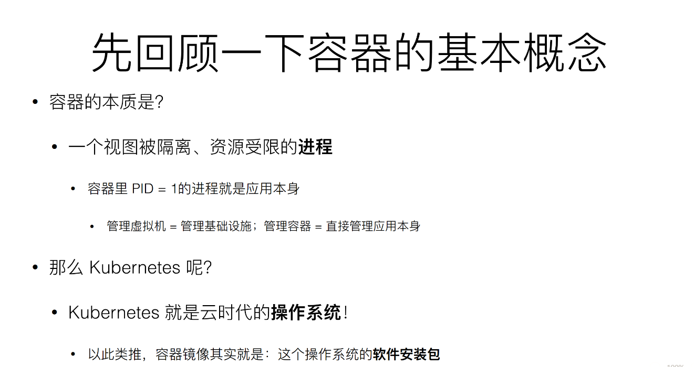
真实操作系统的例子
假如有一个程序叫做helloworld，这个程序是由一组进程组成，这里说的进程等同于Linux线程。
因为Linux线程是轻量级进程，所以如果从Linux中看helloword的pstree，会看到这个helloword程序由四个线程组成。四个线程相互协作，共享helloword程序的资源，组成了helloworld程序的真实工作情况。
以上实际上是一个进程组的概念。
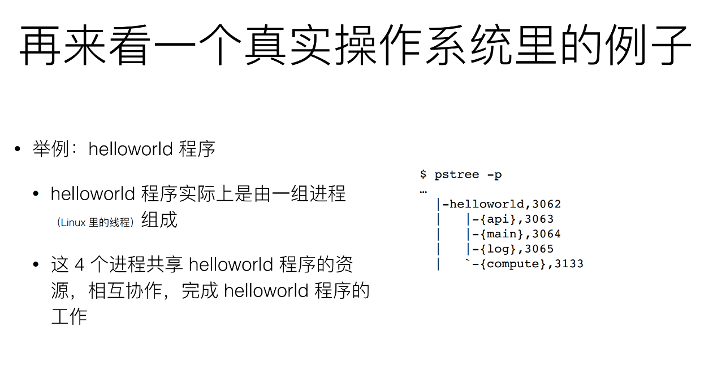
真实的操作系统中，一个程序往往是根据进程组来进行管理的。类比到Kubernetes，由于Pod是Kubernetes进行资源调度的最小单位，那么Pod就可类比成操作系统的进程组。
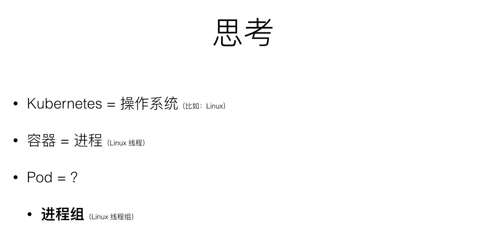
进程组的概念
还是原来的例子：hellowolrd程序由四个进程组成，这些进程会共享一些资源和文件。如果现在把helloworld程序用容器跑起来，应该怎么做？
一个自然的想法是，启动一个docker容器，里面运行四个进程。
但是容器的设计本身是一种单进程的模型。不是说容器内只能起一个进程，由于容器的应用等于进程，所以只能去管理PID=1的这个进程，其他再起来的进程实际上一个托管状态，此时的PID=1的进程具有进程管理的能力。
因为容器中PID=1的进程需要具有进程管理的能力，因此需要PID=1的进程改为systemd，否则这个应用或者容器没有办法去管理多个进程。因为PID=1的进程是应用本身，如果此时该进程被杀死，那么剩下三个进程的资源就没有人回收了。
但是如果真的将这个应用本身改为systemd，或者直接把容器里PID=1的进程直接修改为systemd。这会导致无法获得这个应用的状态，因为容器里运行的是systemd，而不是应用本身。
简单梳理下：
由于容器实际上是一个单进程模型，所以如果在容器里启动多个进程，只有一个可以作为PID=1的进程。如果这个PID=1的进程挂了，其他的进程会成为孤儿，操作系统无法回收这一部分资源。
此时的孤儿进程由宿主机的操作系统的systemd或者init进程管理。
如果在容器里运行一个systemd管理其他进程，这样会导致管理容器无法直接管理应用。应用被systemd接管了，此时应用状态的生命周期不等于容器的生命周期。
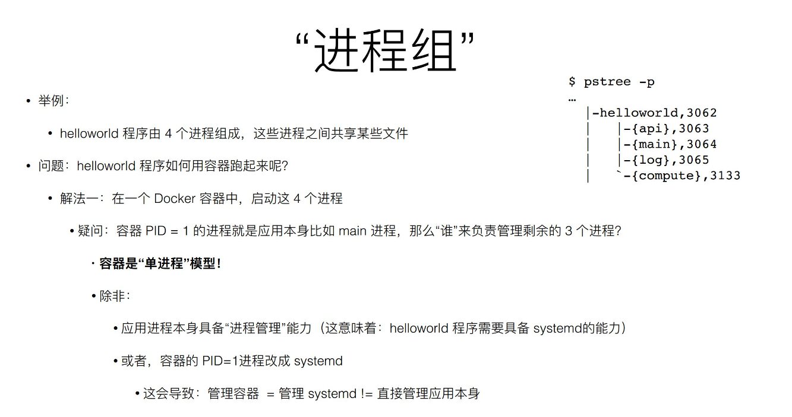
Pod=进程组
Pod是Kubernetes抽象出来的一个可以类比为进程组的概念。
前文提到的这四个进程共同组成的一个应用helloworld，在kubenetes里面实际上会被定义为拥有四个容器的Pod。
因为在一个容器里启动多个进程会遇到上面的问题，所以Kubernetes把四个相互协作的进程用四个独立的容器启动起来，然后定义在一个Pod里。
当Kubernetes把helloword给拉起来的时候，实际上会看到四个容器，他们共享了某些资源，这些资源都属于Pod，所以Pod在Kubernetes里只是一个逻辑单位。多个容器的组合就叫做Pod。Pod是Kubernetes资源分配的原子调度单位。
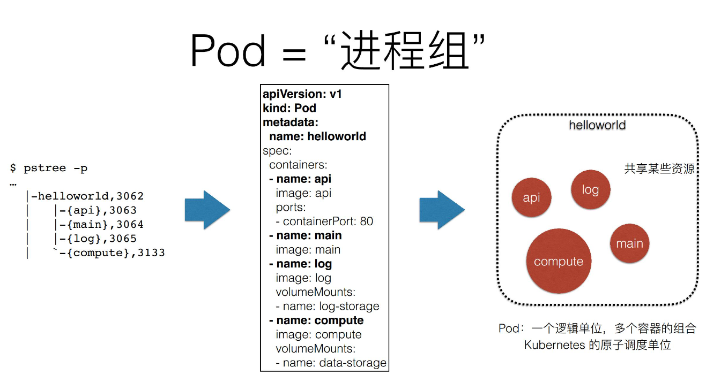
为什么Pod必须是原子调度单位
为什么要把Pod作为一个概念抽象出来呢？为什么不通过调度等方式把Pod这个抽象的概念去掉？为什么Pod必须是Kubernetes里的原子调度单位？
通过一个例子来解释。
比如现在有两个容器，他们是紧密协作的，所以他们应该被部署在同一个pod里。具体来说，第一个容器是App也就是业务容器，他会写日志文件；第二个容器是LogCollector，他会转发业务容器写的日志文件到其他组件。
两个容器的资源需求如下：
- App需要1G内存
- LogCollector需要0.5G内存
而当前集群环境的可用内存：
- Node_A可用内存为1.25G
- Node_B可用内存为2G
比如现在没有Pod的概念，就只有两个容器，需要这两个容器运行在同一台机器上。如果调度器先把App调度到了Node_A上面，由于内存不足以再运行LogCollector，调度失败，必须重新调度。
以上是一个非常典型的成组调度失败的例子，Task co-scheduling问题不是说不能解，在很多项目里，都有类似的解法。
比如在Mesos中，他会进行资源囤积：即当资源满足了所有约束的任务时，才会开始调度，这是一个典型的成组调度的解法。在Mesos中，上文提到的两个"容器"不会立刻调度。但是这样的话调度效率会损失，因为需要等待；其次会因为互相等待而产生死锁。
另一种是Google的解法，他在Omega 系统中做了一个非常复杂且非常厉害的解法，被称为乐观调度：即不管冲突的异常情况，先调度，同时设置一个回滚机制，如果在调度过程中出现了冲突，即通过回滚来解决问题。这个方式来说更加优雅，也更加高效。但是实现机制非常复杂，因为悲观锁的设置一定要比乐观锁要简单。
而像这样一个调度问题，在Kubernetes里，直接通过Pod一个概念解决了，因为在Kubernetes里，App容器和LogCollector容器是属于一个Pod的，在调度时必然是以一个Pod为单位进行调度，因此不存在这个问题。
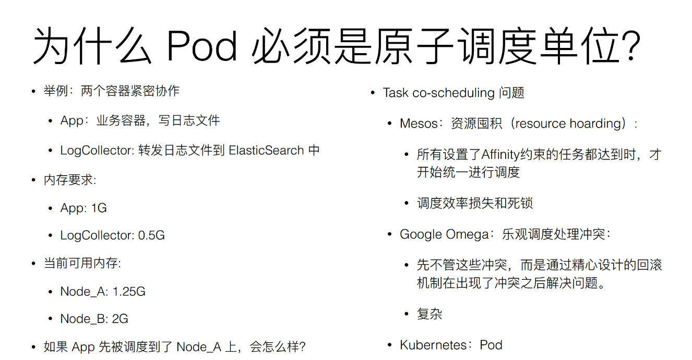
再次理解Pod
首先Pod里面的容器是超亲密关系。和超亲密关系相比，还有一种关系叫亲密关系，这个亲密关系一定是可用通过调度来解决的。
比如现在有两个Pod，需要运行在同一台宿主机上，那么就属于亲密关系，调度器是可以去做的。
对于超亲密关系来说。必须通过Pod来解决，如果超亲密关系赋予不了，那么整个Pod或者整个应用都无法启动。
什么是超亲密关系呢？
- 比如两个进程会发生文件交换，例如一个写日志，一个读取日志；
- 两个进程之间通过localhost或者本地的socket去通信；
- 两个容器或者微服务之间，会发生非常频繁的RPC调用，出于性能的考虑，也应该是超亲密关系；
- 两个容器或者应用，他们需要共享某些Linux NameSpace。最常见的例子就是一个容器需要加入另外一个容器的Network Namespace，这样就可以看到另外一个容器的网络设备信息；
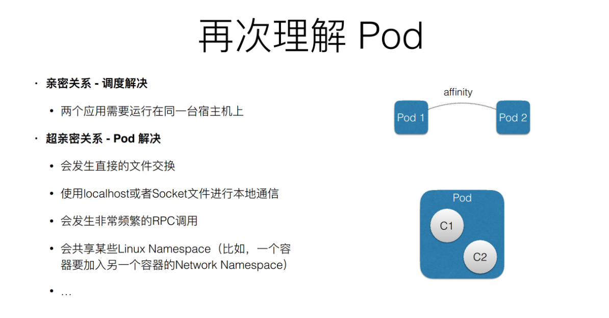
Pod解决了两个问题
- 怎么去描述超亲密关系；
- 怎么去对超亲密关系的容器或者说是业务去做统一调度。
Pod的实现机制
Pod要解决的问题
容器之间原本说被Linux Namespace和cgroups隔开的，所以现在实际要解决的事怎么打破隔离。
具体解法分两个部分：网络和存储。
共享网络
现在有一个Pod，其中包含了容器A和容器B，他们两个需要共享Network Namespace。
Kuberetes会在某个Pod里，额外起一个Infra Container容器来共享整个Pod的Network Namespace。
Infra Container是一个非常小的镜像，是一个汇编语言写的、永远处于暂停状态的容器。由于有了这样一个Infra Container之后，其他所有容器都会通过加入Namespace的方式加入到Infra Container中的Network Namespace中。
因此一个Pod里面的所有容器网络视图是完全一样的，即他们看到的网络设备、IP地址、MAC地址等其他网络信息其实完全是一样的，这些都来自于Pod第一次创建这个Infra Container。
在Pod里面一定有一个IP地址，是这个Pod的Network Namespace 对应的地址，也是Infra Container的IP地址。这个IP地址被Pod中的容器共享。这就是Pod的网络实现方式。
在整个Pod里，必然是Infra Container第一个启动，而且整个Pod的生命周期等同于Infra Container的生命周期，与容器A和容器B是无关的。因此Kubernetes允许单独更新Pod里的某一个镜像，且更新时整个Pod也不会重建，也不会重启。
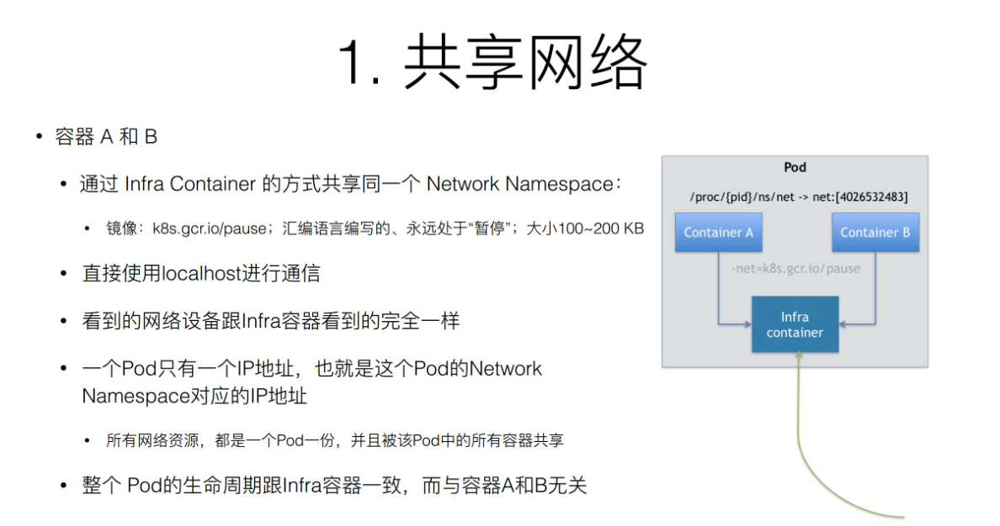
共享存储
现在有两个容器，一个是容器A，另一个是容器B。两个容器需要进行文件共享。
在一个Pod里，声明一个Volume，它是属于Pod的，同一个Pod访问的Volume是同一份Volume。
之前的例子，应用容器App写了日志，只要这个日志是在一个Volume中，只要声明挂载了同一个Volume，这个Volume就可以被另外一个LogCollector容器看到。
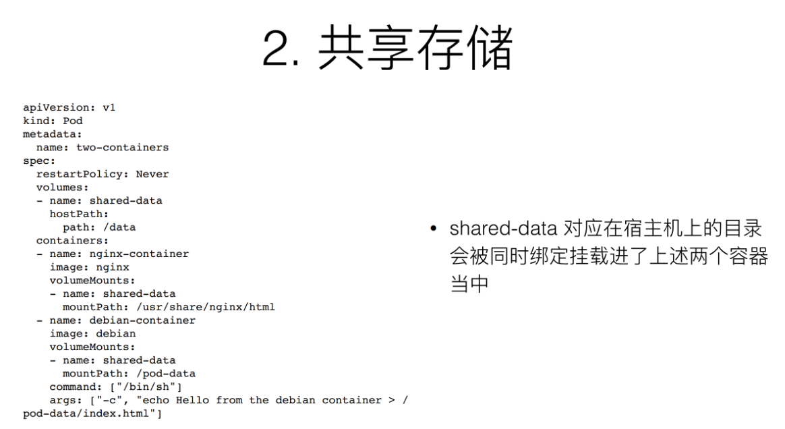
详解容器设计模式
举个例子，现在需要发布一个应用，这个应用是用JAVA写的，打包完了以后需要把他放在Tomcat的web APP目录下面，这样就可以启动起来了。
如果需要打包成镜像，通常有几种做法：
- 把WAR包和Tomcat打包进一个镜像里。此时无论要更新WAR包还是更新Tomcat都要重新做一个镜像。
- 镜像里只打包Tomcat。他就是一个Tomcat，但是需要使用数据卷的方式，从宿主机把WAR包挂载进Tomcat中，挂载到web APP目录下。此时需要维护一套分布式存储系统，因为master分配负载到工作节点是不一定的，有可能这次分配到节点A下一次就分配到节点B，所以必须有一套分布式存储系统，使得容器无论在A还是在B都可以找到这个WAR包。
即使有了分布式存储系统作Volume，还需要负责维护Volume里的WAR包，需要单独写一套Kubernetes Volume 插件，用于每次Pod启动之前，把应用所需要的WAR包下载到Volume里，最后才能被应用挂载到。
Init Container
Kubernetes提供了一种在没有分布式存储的情况下也能发布应用的方式。
首先定义一个Init Container，就是把WAR包从镜像里拷贝到一个Volume里。完成以后就退出。Init Container会比用户容器先启动，而且严格按照定义顺序来执行。
由于一个Pod里面的容器是共享Volume的，tomcat容器启动的时候把Init Container操作的Volume挂载为自己的APP目录，此时APP目录下一定会找到Init Contaier操作的WAR包。
有了Init Container，这个Pod就是一个自包含的“容器组”。不用担心没有分布式存储，Volume不是持久化的，它一定是可以公布的。
通过组合两种不同角色的容器，并且按照像Init Container 这样的一种编排方式，统一的去打包应用。像这样的一个概念，在Kubernetes里就是一个非常经典的容器设计模式，叫做：Sidecar
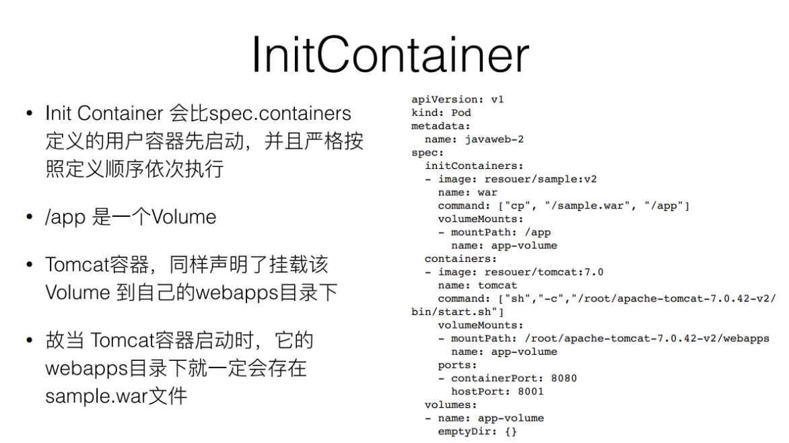
容器设计模式：Sidecar
在Pod里，定义一些专门的容器，用来执行主业务容器的一些辅助工作，这种容器设计模式被称为Sidecar。
还有一些其他操作：
原本需要在容器里执行SSH需要干的事情，比如执行脚本，判断一些前置条件，其实都可以像Init Container或者Sidecar的方式去解决；
日志收集，日志收集本身是一个进程，就可以打包作为pod的一部分；
Debug应用，现在Debug整个应用都可以在应用Pod里面再次定义一个小的额外的Container，因为在同一个Pod里，共享相同的Namespace
查看其他容器的工作状态，不需要登陆到容器里去看，只要把监控组件装到额外的小容器里就行了。业务监控也可以通过Sidecar方式来做。
通过Sidecar可以把辅助功能从业务容器解耦，这个能力还可以重用，即同样的一个Sidecar容器可以被全公司的人共用。这就是设计模式的威力。
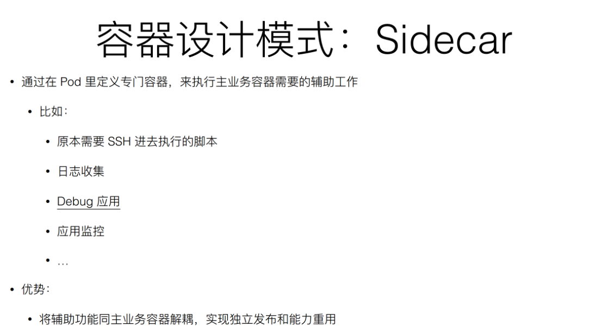
Sidecar：应用与日志收集
前面提到的应用日志收集，业务容器将日志写在一个 Volume 里面，而由于 Volume 在 Pod 里面是被共享的，所以日志容器 —— 即 Sidecar 容器一定可以通过共享该 Volume，直接把日志文件读出来，然后存到远程存储里面，或者转发到另外一个例子。现在业界常用的 Fluentd 日志进程或日志组件，基本上都是这样的工作方式。
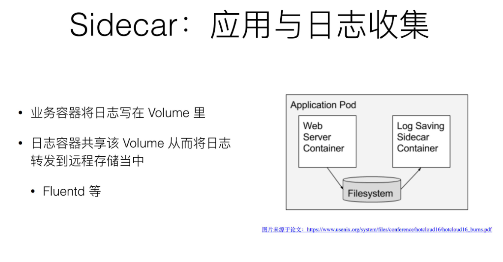
Sidecar：代理容器
假如现在有个 Pod 需要访问一个外部系统，或者一些外部服务，但是这些外部系统是一个集群，那么这个时候如何通过一个统一的、简单的方式，用一个 IP 地址，就把这些集群都访问到？有一种方法就是：修改代码。因为代码里记录了这些集群的地址；另外还有一种解耦的方法，即通过 Sidecar 代理容器。
简单说，单独写一个这么小的 Proxy，用来处理对接外部的服务集群，它对外暴露出来只有一个 IP 地址就可以了。所以接下来，业务容器主要访问 Proxy，然后由 Proxy 去连接这些服务集群，这里的关键在于 Pod 里面多个容器是通过 localhost 直接通信的，因为它们同属于一个 network Namespace，网络视图都一样，所以它们俩通信 localhost，并没有性能损耗。
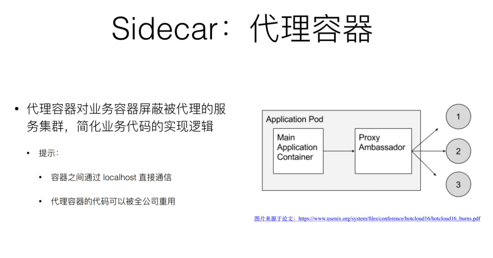
Sidecar：适配器容器
现在业务暴露出来的 API，比如说有个 API 的一个格式是 A，但是现在有一个外部系统要去访问我的业务容器，它只知道的一种格式是 API B ,所以要做一个工作，就是把业务容器怎么想办法改掉，要去改业务代码。但实际上，你可以通过一个 Adapter 帮你来做这层转换。
现在有个例子：现在业务容器暴露出来的监控接口是 /metrics，访问这个这个容器的 metrics 的这个 URL 就可以拿到了。可是现在，这个监控系统升级了，它访问的 URL 是 /health，metrics 不认识。那这个怎么办？可以不去改代码，而是额外写一个 Adapter，用来把所有对 health 的这个请求转发给 metrics，所以这个 Adapter 对外暴露的是 health 这样一个监控的 URL，这就可以了，你的业务就又可以工作了。
这样的关键还在于 Pod 之中的容器是通过 localhost 直接通信的，所以没有性能损耗，并且这样一个 Adapter 容器可以被全公司重用起来，这些都是设计模式给我们带来的好处。
总结
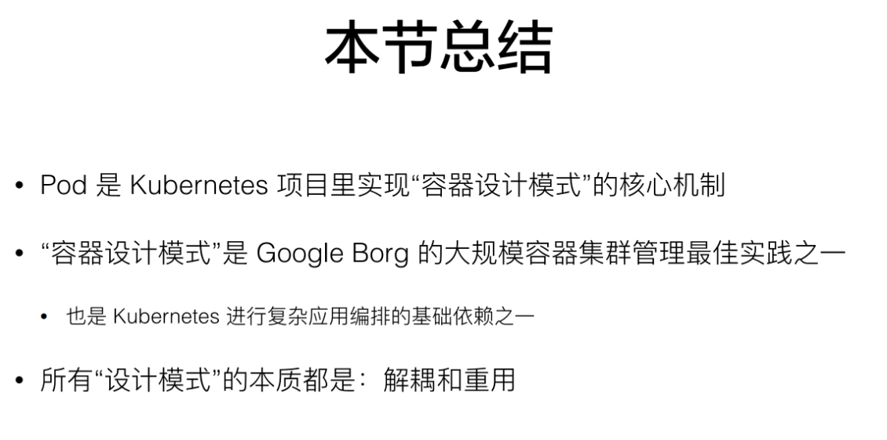